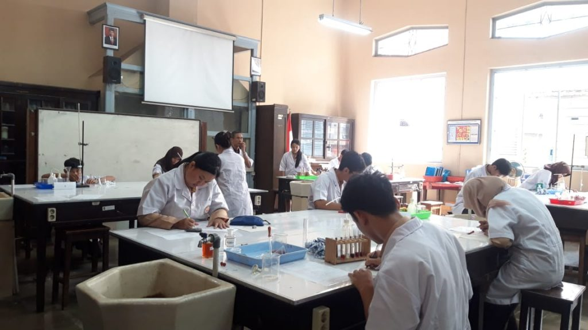
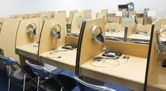
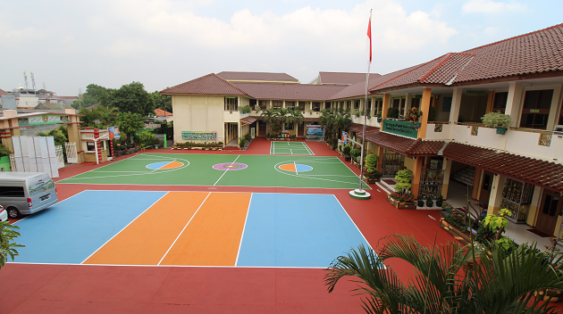
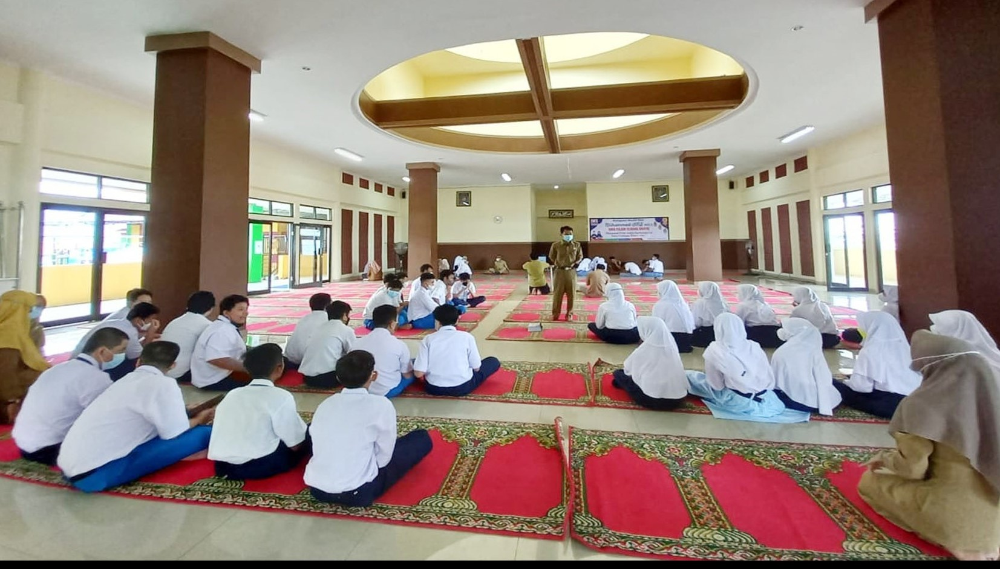
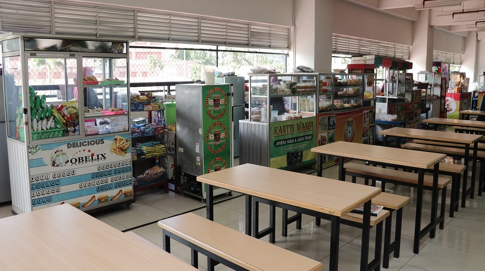

Fasilitas Sekolah

Laboratorium Kimia
Fasilitas lengkap untuk pembelajaran praktikum kimia secara mendalam.

Laboratorium Komputer
Dilengkapi dengan komputer modern untuk mendukung pembelajaran teknologi.

Laboratorium Bahasa Asing
Dilengkapi dengan alat Audio dan visual untuk membantu praktikum bahasa.

Lapangan Futsal, Badminton, dan Basket
Area luas untuk berbagai aktivitas olahraga siswa.

Masjid Khusus Sekolah
Masjid yang luas dan nyaman, perlengkapan sholat lengkap untuk siswa-siswi.

Kantin
Menyediakan makanan dan minuman sehat untuk siswa dan guru.